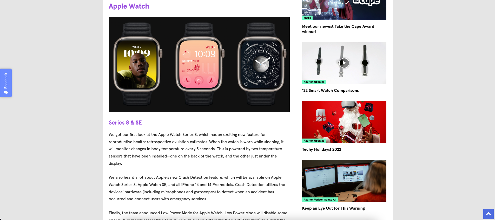

Business Need
The Helix News Hub addresses the challenge faced by frontline employees in staying updated with the latest and greatest in tech news. Prior to the platform's launch, employees struggled to keep up with the information they needed to be experts in their field due to the clunky interface of the learning management system and the low engagement with other channels of communication. Helix News offers a high-quality platform that provides employees with relevant tech alerts and information they need while tracking engagement analytics to determine the effectiveness of the content. This platform capitalized on impactful and engaging content with a user experience that felt more like a visit to their favorite tech news site.
My Role
- Led a team of researchers, content writers, and media professionals to drive engagement to the communications platform through relevant content
- Integrated real-time problem and outage alerts for frontline employees
- Planned content pipeline to streamline and optimize the content creation and publishing process
- Organized real-time coverage of key technology events and new product launches
- Suggested updates and new content focus based on the analysis of user traffic data
Effectiveness
The communications platform offers several key benefits over relying on email communication or various other platforms. It provides a single location for all internal communications, reducing the need to switch between multiple platforms or search through a cluttered email inbox. It is easier to keep employees informed and up-to-date on important information and decisions. A centralized platform also allows for better tracking and monitoring of internal communications, making it easier to assess impact and effectiveness.
- Engagement and Adoption - Ramping up to thousands of monthly active users with a marked increased engagement in the knowledge content.
- Streamlined Content Pipeline - Improving the creative team's ability to plan, promote, and publish numerous pieces of content on a weekly basis to frontline employees.
- User-Centered Design and Content Strategy - Creating an experience that feels more intuitive to users, resonates with employees, and supports the overall goals of the company.